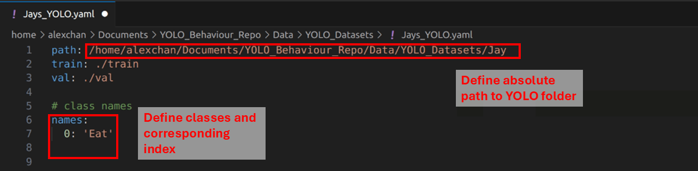
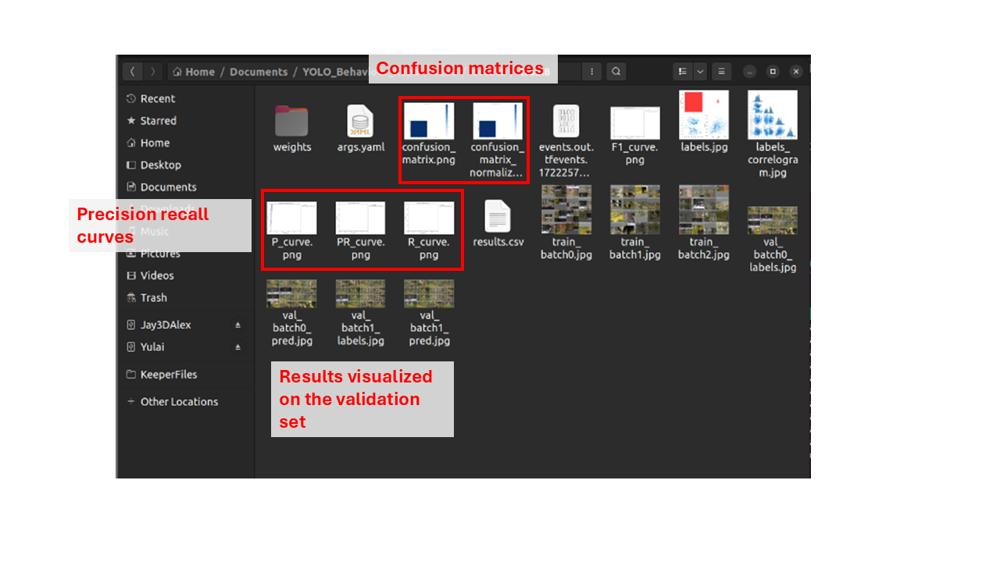

Model training
After you have done some annotations and converted it into the YOLO format, you are now ready to train a YOLO model!
The training process is super simple, literally 4 lines of code, and I also prepared a quick script to do it.
GPU access
One thing to note before starting training is that ideally you should have a good GPU on your computer to train these models. GPU stands for “Graphical processing units”, originally mostly optimized to run computer games, but turned out to be super useful for deep learning models. Basically you really want a good GPU to be able to train + process the YOLO model, because it will be multiple magnitudes faster.
If you plan to start using computer vision/ deep learning in your research/ in the lab, I would recommend getting a gaming laptop/ gaming PC, with a good GPU for training and inference. Another option is to check with your institute/ university on whether they have a GPU cluster/ computing facility for you to train and deploy models. A lot of universities nowadays should have these facilities!
Finally, if all else fails, you can also consider cloud GPU. A lot of companies now provide GPU resource for model training for a given price. You can consider services like google collab, which should be easy to setup.
Model Training
Next is model training, you will need to setup a config file for YOLO, where you specify the path to your YOLO dataset. Our sample dataset provided all the datasets used in the original manuscript + their respective config files, under./Data/YOLO_Datasets/. You can copy and paste any of them to modify it accordingly for your dataset!
Here is what a config file looks like:
All you have to do is to change the absolute path to where your YOLO folder is, and change the class and index for each trained class. If you used the label studio converter, the class order is determined automatically, and should have printed in the terminal when you ran the script.
Next, you can train the model using the Code/2_TrainYOLO.py script. Here are the arguments required:
--Model: Type of YOLO model, which corresponds to different sizes. Bigger models are generally more accurate, but would occupy more of your GPU and run slower. So you can decide which one to use, the one used in the original manuscript is the YOLOv8-large models. Options include: n (nano), s (small), m (medium), l (large) or x (extra large)
--Config: Path to the YOLO config file
--Epochs: Total number of epochs to train
To train a YOLOv8-l model on the Jay dataset, you can run this in the terminal:
python Code/2_TrainYOLO.py --Model l --Config "./Data/YOLO_Datasets/Jays_YOLO.yaml" --Epochs 200
Running this will then start the training process. Ultralytics will then automatically create a folder in the current directory called runs/, which is where they save all the training and validation statistics. Right when the training starts, you can check some of the visualizations of the training data to make sure everything is correct.
The terminal should also print the current progress of the training, so you can keep track of how the model training is proceeding and how long it might take.
After training is finished, the folder above will be updated, with more statistics on the accuracy of the model. You can explore these images to determine how well the model performed to predict bounding boxes, but keep in mind for the actual application you will ideally have an annotated dataset to compare to, so these evaluation statistics are less important.
Then finally, the most important is the final model weights, which is stored inside the weights folder. The weight you would want to save will be best.pt, which is the epoch with the lowest validation loss. I recommend copying the weight to another folder to be saved.
Congrats, you now have a trained model, you can then move on to visualize results and inference